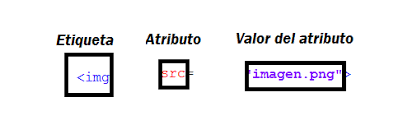

Fortalecer mi aprendizaje y ponerlo en practica
Este sitio web tiene como propósito fortalecer mi aprendizaje por medio de los conceptos de las etiquetas básicas de HTML en conjunto con sus atributos
y valores, de esta manera construir un bueno sitio web y solucionar los problemas presentados
en la relación br de la guía o en futuros proyectos.
Etiquetas Básicas de HTML
segun lo expresa Prescott (2015) body para el contenido head para información sobre el documento div> división dentro del contenido a para enlaces strong para poner el texto en negrita br para saltos de línea H1…H6 para títulos dentro del
contenido img para añadir imágenes al documento ol para listas ordenadas, ul para listas desordenadas, li para elementos dentro de la lista p para parágrafos span para estilos de una parte del texto Para prescott, cualquier persona puede
crear una página web por medio de HTML, no es necesario tener una habilidad especial, ni un master. Solo se requiere una gran voluntad de aprender y paciencia dedicando tiempo a practicar.
Prescott, P. (2015). HTML 5. Babelcube Inc
Atributos y valores
Un atributo HTML es un valor o propiedad que añades a una etiqueta HTML. Este otorgará una propiedad o comportamiento específico a la propia etiqueta, por lo que es muy importante que los conozcas todos.según lo expresa celaya luna (2022)
entre los nuevos atributos para las etiquetas de tipo input están,autocomplete,autofocus,min,max,placeholder y required.
https://elibro-net.bibliotecavirtual.unad.edu.co/es/ereader/unad/56045
